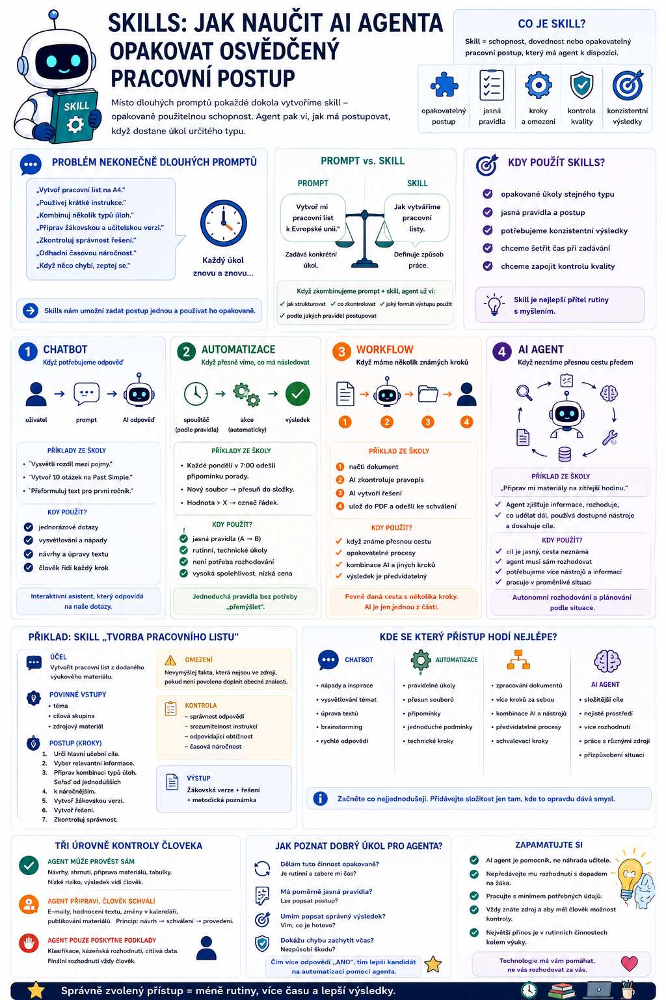

Při běžné práci s AI často znovu a znovu vysvětlujeme stejné věci: jak má vypadat pracovní list, jak má model zkontrolovat text nebo jakým způsobem má postupovat při rešerši. U AI agenta ale můžeme takový postup uložit jako opakovaně použitelnou schopnost – skill. Agent pak nemusí pokaždé dostávat celý návod znovu.

Problém nekonečně dlouhých promptů
Představme si, že pravidelně vytváříme pracovní listy.
Pokaždé AI napíšeme něco podobného:
Používej krátké a jednoznačné instrukce.
Kombinuj několik typů úloh.
Připrav žákovskou a učitelskou verzi.
Zkontroluj správnost řešení.
Odhadni časovou náročnost.
Pokud chybí důležitý údaj, nevymýšlej si ho a zeptej se.
Funguje to.
Jenže při desátém pracovním listu si člověk začne říkat:
Opravdu musím celý tento návod zadávat pokaždé znovu?
Právě tady začínají být zajímavé skills.
Co je skill
Skill můžeme česky chápat jako:
Například:
- Vytvoř pracovní list
- Zkontroluj test
- Připrav rešerši
- Převeď text do jednodušší podoby
- Zkontroluj webovou stránku
Skill tedy říká agentovi:
Když potřebuješ udělat tento typ práce, postupuj tímto způsobem.
Místo dlouhého návodu v každém promptu máme jednou připravený postup.
Skill není jen další prompt
Na první pohled může skill vypadat jako uložený prompt.
A někdy může být velmi jednoduchý.
Ale užitečný skill bývá strukturovanější.
Může obsahovat například:
- kdy se má použít,
- jaké vstupy potřebuje,
- jednotlivé kroky,
- pravidla a omezení,
- kontrolní kritéria,
- informace o dostupných nástrojích,
- požadovaný formát výsledku,
- situace, kdy se má agent zastavit.
Skill tak není pouze:
Může spíše říkat:
Pokud máš vytvořit pracovní list, nejprve zjisti cílovou skupinu a učební cíl. Potom analyzuj zdrojový materiál. Vytvoř žákovskou verzi, řešení a nakonec proveď kontrolu podle těchto kritérií.
To už je pracovní metoda.
Prompt versus skill
Rozdíl si můžeme ukázat jednoduše.
Prompt
Prompt zadává konkrétní úkol.
Skill
Skill definuje způsob práce.
Když je obojí spojíme:
Připrav pracovní list k Evropské unii pro druhý ročník.
Skill „Tvorba pracovního listu“
↓
agent už ví:
jak materiál strukturovat,
co musí obsahovat,
co má zkontrolovat,
v jakém formátu má výsledek odevzdat.
Uživatel nemusí všechna pravidla znovu vypisovat.
Jednoduchý příklad školního skillu
Představme si skill:
Jeho instrukce mohou říkat:
Účel
Vytvořit pracovní list z dodaného výukového materiálu.
Povinné vstupy
- téma,
- cílová skupina,
- zdrojový materiál.
Postup
- Urči hlavní učební cíle.
- Vyber pouze informace relevantní pro dané téma.
- Připrav kombinaci několika typů úloh.
- Seřaď je od jednodušších k náročnějším.
- Vytvoř žákovskou verzi.
- Vytvoř řešení.
- Zkontroluj správnost.
- Odhadni čas potřebný k vypracování.
Omezení
Nevymýšlej konkrétní fakta, která nejsou ve zdroji, pokud není výslovně povoleno doplnit obecné znalosti.
Výstup
Tohle už lze používat stále dokola.
Proč jsou skills důležité pro agenty
Agent má obvykle několik možností, jak splnit úkol.
Pokud má pouze obecné instrukce, může pokaždé improvizovat.
To vede k problému:
Skill umožňuje říct:
Tohle už umíme. Použij osvědčenou metodu.
Agent tak nemusí postup pokaždé znovu vynalézat.
Výsledkem může být:
Skill může obsahovat i kontrolu
Jedna z nejcennějších částí dobrého skillu není samotná tvorba.
Je to kontrola výsledku.
Například:
zda má každá uzavřená otázka správné řešení,
zda instrukce nejsou dvojznačné,
zda odpovídá obtížnost cílové skupině,
zda lze materiál zvládnout v zadaném čase.
Agent tedy nepoužije skill jen:
ale také:
To výrazně snižuje množství jednoduchých chyb.
Skill může používat nástroje
Představme si skill:
Jeho pracovní postup může být:
- použij nástroj pro tematický plán,
- zjisti aktuální téma,
- vyhledej odpovídající výukové zdroje,
- vytvoř materiál,
- proveď kontrolu.
Skill tedy nemusí obsahovat samotná data.
Může agentovi říkat:
To je důležitý rozdíl.
Skill versus tool
Tyto dva pojmy se snadno pletou.
Můžeme si je velmi zjednodušeně rozlišit takto:
Tool – nástroj
Říká:
Například:
- otevřít dokument,
- vyhledat na webu,
- uložit soubor.
Skill – dovednost
Říká:
Například:
Skill přitom může během práce používat několik tools.
Skill versus workflow
Tady je rozdíl o něco jemnější.
Workflow
Obvykle představuje konkrétní posloupnost kroků:
Například:
Skill
Může být flexibilnější.
Popisuje způsob, jak určitý typ problému řešit, a agent může podle situace některé kroky přizpůsobit.
Například:
Při přípravě pracovního listu zvol typ úloh podle věku žáků a charakteru učiva.
Workflow tedy často říká:
Skill spíše:
V praxi se ale oba přístupy mohou překrývat.
A to vůbec nevadí.
Technologické názvosloví není cílem.
Cílem je mít spolehlivý pracovní postup.
Skill versus paměť
Také paměť má jinou úlohu.
Paměť
říká například:
Skill
říká:
Paměť tedy typicky uchovává:
Skill uchovává:
Agent při jednom úkolu může využít obojí.
Skládání skills
A tady to začne být opravdu zajímavé.
Nemusíme vytvořit jeden obrovský skill:
Mnohem lepší mohou být malé specializované schopnosti.
Například:
- CREATE-WORKSHEET – vytvoř pracovní list.
- CHECK-WORKSHEET – zkontroluj pracovní list.
- ADAPT-MATERIAL – přizpůsob materiál daným požadavkům.
- CREATE-ANSWER-KEY – vytvoř řešení.
- EXPORT-FOR-PRINT – připrav materiál k tisku.
Agent je pak může kombinovat:
↓
ADAPT-MATERIAL
↓
CHECK-WORKSHEET
↓
EXPORT-FOR-PRINT
Z několika menších schopností vzniká složitější pracovní proces.
Malé skills jsou často lepší než jeden obrovský
Představme si jediný skill:
který umí:
- připravit hodinu,
- napsat test,
- zkontrolovat známky,
- vytvořit prezentaci,
- připravit e-mail,
- hledat ve směrnicích,
- upravit rozvrh.
To už je spíš kuchyňský robot, bagr a varhany v jedné bedně.
Technicky zajímavé.
Prakticky se špatně udržuje.
Mnohem lepší je mít několik menších schopností s jasným účelem.
Skill by měl mít jednu odpovědnost
Dobré pravidlo:
Například:
je dobrý skill.
není.
Čím jasnější účel skill má, tím snadněji:
Kdy má agent skill použít
Dobrý skill by měl obsahovat také popis:
Například:
Použij tento skill, když uživatel žádá vytvoření pracovního listu, sady cvičení nebo procvičovacího materiálu pro výuku.
Agent pak dokáže rozpoznat:
A nemusí celý postup improvizovat.
Stejně důležité je říct, kdy skill nepoužívat
Například:
Nepoužívej tento skill pro tvorbu testů určených k formálnímu hodnocení.
Pro ně může existovat samostatný skill:
s přísnějšími pravidly.
To pomáhá zabránit tomu, aby agent použil správně vypadající postup ve špatné situaci.
Příklad: skill pro kontrolu pracovního listu
Pojďme vytvořit jiný.
Cíl
Najít chyby a problémy v připraveném pracovním listu.
Kontroluj
Obsah
- věcnou správnost,
- správnost řešení.
Instrukce
- srozumitelnost,
- jednoznačnost.
Obtížnost
zda odpovídá zadané cílové skupině.
Čas
zda rozsah odpovídá plánované době.
Strukturu
- logické pořadí,
- duplicity,
- chybějící části.
Výstup
Agent nemá pracovní list bez upozornění celý přepisovat.
Má nejprve vytvořit:
To je pěkný příklad specializovaného revizního skillu.
Skills ve vibe codingu
Úplně stejný princip se dá použít při tvorbě aplikací.
Coding agent může mít například skills:
- CREATE-FEATURE – jak správně přidat novou funkci.
- FIX-BUG – jak postupovat při hledání chyby.
- REVIEW-CODE – jak kontrolovat změny.
- RUN-TESTS – co všechno otestovat před dokončením úkolu.
- CREATE-DOCUMENTATION – jak dokumentovat novou funkci.
Uživatel napíše:
„Přidej export do PDF.“
Agent nemusí improvizovat celý vývojový proces.
Použije standardní postup:
To je důležitý posun od náhodného vibe codingu směrem k řízenému vývoji.
Skill jako recept
Pro netechnické vysvětlení si můžeme skill představit jako recept.
Máme kuchaře – AI agenta.
Má nástroje:
To jsou tools.
Má suroviny.
To jsou data a zdroje.
A má recept:
Smíchej toto, postupuj takto, peč 30 minut a nakonec zkontroluj teplotu.
To je skill.
Agent samozřejmě může bez receptu improvizovat.
Ale pokud chceme stejné jídlo připravovat pravidelně, recept nám zajistí mnohem stabilnější výsledek.
Skills mohou vznikat postupně
Nemusíme všechny pracovní postupy vymyslet předem.
Naopak.
Nejlepší skills často vzniknou z reálné práce.
Například si všimneme:
Pokaždé při tvorbě pracovního listu musím AI připomínat stejné čtyři věci.
Skvělé.
To je kandidát na skill.
Nebo:
AI při kontrole testu pořád přehlíží bodování.
Přidáme bodování mezi povinné kontrolní kroky.
Skill se tedy může postupně zlepšovat podle skutečných zkušeností.
Skill by měl být verzovaný
Pokud na skillu závisí pravidelná práce, je dobré vědět:
Například:
↓
první verze.
Zjistíme problémy.
↓
WORKSHEET-SKILL v2
obsahuje lepší kontrolu času.
Později:
v3
přidá pravidla pro diferenciaci.
Tím máme možnost sledovat:
Co jsme změnili a proč?
To je mnohem lepší než jeden obrovský prompt, který několik měsíců náhodně přepisujeme.
Skills potřebují testování
Tohle je zásadní.
Nestačí vytvořit skill a jednou zjistit, že funguje.
Je potřeba ho zkusit na různých případech.
Například skill pro pracovní list:
Běžný text.
Test 2
Velmi krátký zdroj.
Test 3
Chybí cílová skupina.
Test 4
Zdroj obsahuje protichůdné informace.
Test 5
Uživatel požaduje něco, co je mimo účel skillu.
Dobrý skill musí nejen vědět:
ale také:
Skill nemá zakrývat problémy
Pokud musíme do skillu přidat 120 pravidel, protože systém neustále dělá něco špatně, stojí za to se zastavit.
Možná problém není ve skillu.
Možná:
- používáme špatný model,
- máme nekvalitní zdroje,
- snažíme se automatizovat příliš složitý proces,
- potřebujeme pevné workflow místo agentního rozhodování.
Skill není kouzelná lepicí páska na špatně navržený systém.
Jak navrhnout první skill
Pro začátek stačí odpovědět na sedm otázek:
- Jakou jednu dovednost učíme?
Vytvořit pracovní list. - Kdy ji má agent použít?
Když uživatel žádá výukový procvičovací materiál. - Jaké vstupy potřebuje?
Téma, cílová skupina, zdroje. - Jak má postupovat?
Analýza → návrh → tvorba → kontrola. - Jaké nástroje smí použít?
Dokumenty a případně vyhledávání ve zdrojích. - Jak pozná kvalitní výsledek?
Podle definovaného checklistu. - Kdy se má zastavit?
Pokud chybí nezbytný zdroj nebo nelze určit správný postup.
A máme první použitelnou definici skillu.
Nejdůležitější změna: znalosti se přesouvají z promptu do systému
Při klasické práci s chatbotem nese velkou část pracovního postupu uživatel ve své hlavě.
Uživatel ví:
Potom musím připomenout tamto.
Nakonec musím chtít kontrolu.
Skills umožňují tyto zkušenosti formalizovat.
To je docela velká věc.
Protože potom už know-how není ukryté jen v:
„Já vím, jak mám AI správně promptovat.“
Je zachycené přímo v agentním systému.
Proč je to zajímavé pro školy
Ve školách existuje velké množství opakovaných postupů.
- jak připravujeme pracovní list
- jak kontrolujeme test
- jak zapisujeme zdroje
- jak upravujeme výukový materiál
- jak připravujeme metodickou přípravu
Místo toho, aby každý uživatel AI znovu vymýšlel vlastní obrovský prompt, lze kvalitní pracovní postup připravit jednou.
Pak jej lze:
To už je mnohem zajímavější než náhodná sbírka „50 nejlepších promptů pro učitele“.
Od knihovny promptů ke knihovně schopností
Možná jsme začínali AI cestu takto:
prompt na test
prompt na pracovní list
prompt na přípravu hodiny
Další krok může být:
WORKSHEET
LESSON-PLAN
ASSESSMENT-CHECK
MATERIAL-ADAPTATION
SOURCE-RESEARCH
Rozdíl je v tom, že skill není jen text, který kopírujeme.
Je součástí způsobu, jak agent vykonává práci.
A právě proto budou skills důležitou součástí agentních systémů.
Zapamatujte si
Tool říká agentovi:
Paměť říká:
RAG mu pomáhá:
Workflow určuje:
Skill zachycuje:
Dobře navržené skills umožňují agentovi používat opakovaně osvědčené postupy místo toho, aby pokaždé všechno řešil od začátku.
Co dál
Teď už jsme během série postupně poskládali téměř všechny části agentního systému.
Máme:
↓
instrukce
↓
tools
↓
memory
↓
RAG
↓
skills
↓
workflow
↓
MCP
↓
agent
A právě proto bych jako další článek udělala:
Tentokrát bez zavádění dalšího nového pojmu.
Naopak bychom všechny dosavadní pojmy položili na jednu hromadu a ukázali, co přesně v agentním systému dělají a co si lidé nejčastěji pletou.